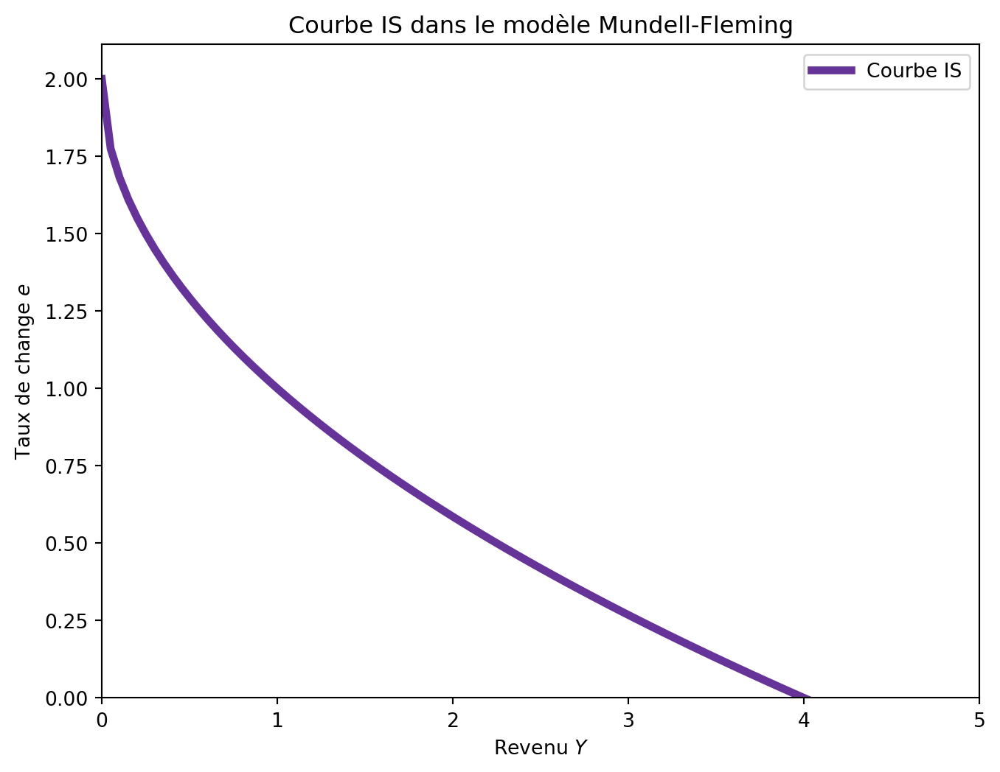
6 Le modèle Mundell-Fleming
Le modèle de Mundell-Fleming est un modèle macroéconomique qui étend le modèle IS-LM à une économie ouverte, prenant en compte les interactions internationales. Il est essentiel pour comprendre comment les politiques monétaires et fiscales influencent les économies ouvertes, en particulier dans le contexte des taux de change flottants et fixes. Il est décrit comme “le paradigme dominant pour étudier la politique monétaire et fiscale en économie ouverte”.
Le modèle Mundell-Fleming est basé sur le modèle IS-LM, mais il introduit des éléments clés pour traiter les économies ouvertes. On maintient l’hypothèse d’un niveau de prix fixe, ce qui permet de se concentrer sur les interactions entre le marché des biens (et donc le revenu) et le marché monétaire à court terme. La différence majeure réside dans l’hypothèse d’une petite économie ouverte avec une mobilité parfaite des capitaux, ce qui signifie que le taux d’intérêt national est déterminé par le taux d’intérêt mondial.
Aujourd’hui, le modèle Mundell-Fleming utile pour analyser comment les flux internationaux de capitaux et de biens influencent les économies nationales. À l’époque de sa création, il visait à résoudre des questions cruciales sur l’efficacité des régimes de taux de change flottants par rapport aux taux fixes.
6.1 Hypothèses du modèle Mundell-Fleming
L’économie décrite par le modèle Mundell-Fleming repose sur plusieurs hypothèses clés:
- Petite économie ouverte:
- Ouverte signifie que l’économie commerce avec ses partenaires internationaux, entraînant des flux de biens et de capitaux.
- Petite indique que l’économie ne peut pas influencer certaines variables déterminées à l’échelle mondiale, notamment le taux d’intérêt.
- Mobilité parfaite des capitaux: Les capitaux peuvent circuler librement entre les pays
- Conséquence: le taux d’intérêt national est déterminé par le taux d’intérêt mondial.
- Niveau de prix fixe: Le niveau des prix est constant à court terme, ce qui permet de se concentrer sur les interactions entre le marché des biens et le marché monétaire.
Comme l’économie commerce, nous devons tenir compte des importations et des exportations dans l’équation de la courbe IS. Cependant, la courbe LM devient plus simple car le taux d’intérêt est fixe et déterminé à l’échelle mondiale.
Petite économie ouverte
Le modèle Mundell-Fleming est conçu pour une petite économie ouverte, ce qui signifie qu’il ne prend pas en compte les effets des politiques économiques sur les taux d’intérêt mondiaux. Ainsi, le taux d’intérêt national est considéré comme exogène et constant:
r = r^\star \tag{6.1}
Pour comprendre cette hypothèse, il est utile de considérer que le pays est trop petit pour influencer les taux d’intérêt mondiaux. Imaginons qu’un événement se produise dans le pays, entraînant une augmentation du taux d’intérêt national. Comme le capital est parfaitement mobile, les investisseurs étrangers seraient attirés par ce taux d’intérêt plus élevé. Ils investiraient dans le pays, augmentant l’offre de capitaux et faisant baisser le taux d’intérêt jusqu’à ce qu’il revienne à son niveau mondial r^\star.
Par conséquent, le taux d’intérêt national est fixé de manière exogène.
6.2 La courbe IS^{MF}
Dans le modèle IS-LM, la courbe IS représente l’équilibre sur le marché des biens, où la production totale est égale à la demande globale. À différence du modèle IS-LM, cette courbe tient compte des exportations nettes (exportations moins importations), qui sont influencées par le taux de change.
La courbe IS^{MF} est définie par l’équation suivante:
Y = C(Y-T) + I(r) + G + NX(e) \tag{6.2}
Le nouveau terme NX(e) représente les exportations nettes, qui dépendent du taux de change nominal e.
Imaginons que le pays exporte davantage. Ceci implique les exportations nettes NX(e) augmentent et, donc, le revenu. L’augmentation du revenu se produit car il est nécessaire de produire les biens et services avant de pouvoir les exporter. De même, si les importations augmentent, les exportations nettes diminuent, ce qui réduit le revenu, car les importations représentent une partie de la consommation produite à l’étranger et, donc, non générée dans le pays.
Nous avons indiqué que les exportations nettes NX(e) dépendent du taux de change nominal e.1 Ici, e mesure la quantité de monnaie étrangère nécessaire pour acheter une unité de monnaie domestique. Par exemple, si e = 50, cela signifie qu’il faut 50 pesos pour acheter un euro, et on pourrait écrire e = 50 \frac{USD}{EUR}.
Quand e augmente, la monnaie domestique s’apprécie: il faut plus de monnaie étrangère pour acheter une unité de monnaie domestique.
Taux de change et importations
Imaginons qu’une voiture coûte 32000 euros en France et 31500 dollars aux USA. Faisons l’hypothèse que 1 euro coûte 1.05 dollars, ainsi e=1.05 \frac{USD}{EUR} et ignorons les coûts de transport.
En conséquence, la voiture produite aux USA coûte 31500 USD \frac{1}{1.05\frac{USD}{EUR}} = 30000 EUR et on préfère importer la voiture étrangère.
Imaginons que l’euro de déprécie et passe de 1.05\frac{USD}{EUR} à 0.95\frac{USD}{EUR}. La voiture étrangère coûte maintenant 31500 USD \frac{1}{0.95 \frac{USD}{EUR}} = 33157 EUR et, donc, on préfère acheter la voiture locale.
En conséquence, une dépréciation de la monnaie augmente les exportations nettes.
Avec notre notation, les exportations nettes NX(e) sont une fonction décroissante de e: si e augmente, NX(e) diminue.
Enfin, comme r = r^\star est constant, l’investissement I(r) devient constant, sauf si r^star change. Ainsi, la courbe IS^{MF} ne dépend pas de r et peut être écrite comme suit, en sachant que quand r^\star change la courbe se déplace (de manière similaire au fait que quand G change la courbe IS se déplace):
Y = C(Y-T) + \bar{I} + G + NX(e) \tag{6.3}
Cette courbe est décroissante sur le plan (Y,e). Imaginons que e augmente, et donc, NX(e) diminue. La partie droite de l’équation diminue, ce qui implique que le revenu Y doit diminuer pour que l’équation soit satisfaite.
Mathématiquement, nous avons:
\mathrm{d}Y = c_1 \mathrm{d}Y + NX'(e) \mathrm{d}e \implies \frac{\mathrm{d}e}{\mathrm{d}Y} = \frac{1-c_1}{NX'(e)} < 0
car NX'(e) < 0 et c_1 \in (0,1).
6.3 La courbe LM^{MF}
Le marché de la monnaie est représenté par la courbe LM^{MF}, qui est base sur les mêmes principes que la courbe LM du modèle IS-LM. Ainsi, elle continue de représenter l’équilibre entre l’offre et la demande d’encaisses réels et l’équation de la courbe est:
\frac{M^s}{p} = L(Y,r) \tag{6.4}
Dans cette équation, \frac{M^s}{p} est la quantité d’encaisses réels offertes par la banque centrale, où M^s est l’offre monétaire et p est le niveau des prix. Côté demande, L(Y,r) est la demande d’encaisses réels en fonction du revenu Y et du taux d’intérêt r. Comme les capitaux sont parfaitement mobiles, le taux d’intérêt est constant et égal au taux d’intérêt mondial r^\star. Par conséquent, la courbe LM^{MF} est une droite verticale, car la demande d’encaisses réels ne dépend pas du taux d’intérêt mais seulement du revenu Y:
L(Y,r^\star) = L(Y)
Le taux de change n’intervient pas dans la courbe LM^{MF}.
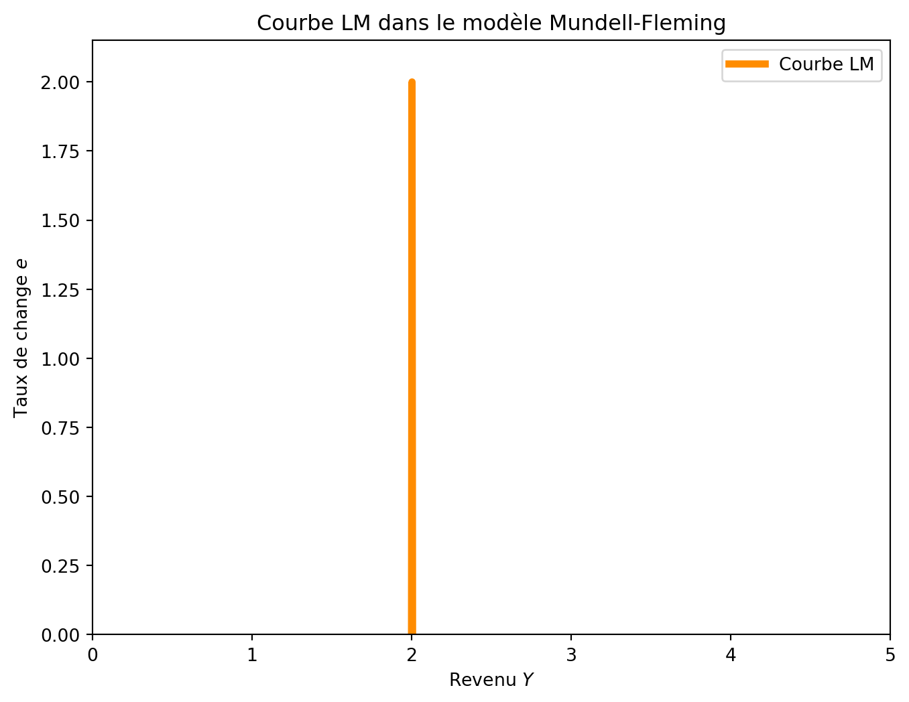
6.4 IS^{MF} et LM^{MF}
Les courbes IS^{MF} et LM^{MF} sont les deux éléments clés du modèle Mundell-Fleming. La courbe IS^{MF} représente l’équilibre sur le marché des biens, tandis que la courbe LM^{MF} représente l’équilibre sur le marché de la monnaie. L’équilibre global de l’économie est atteint lorsque les deux courbes se croisent, ce qui signifie que le niveau de revenu Y et le taux de change e sont en équilibre simultanément.
\begin{aligned} Y &= C(Y-T) + I(r^\star) + G + NX(e) \\ \frac{M^s}{p} &= L(Y, r^\star) \end{aligned} \tag{6.5}
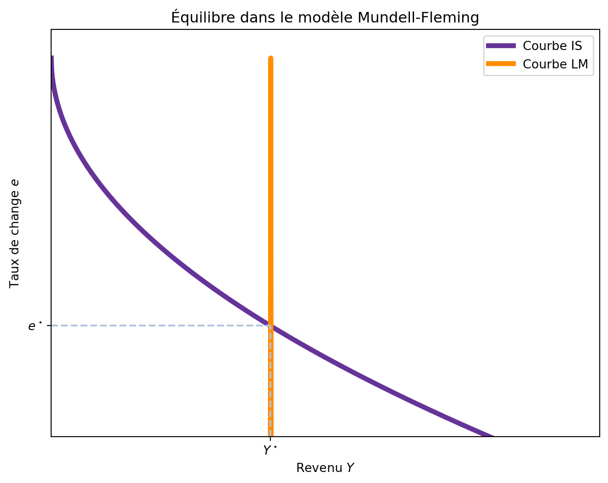
6.5 Types de taux de change
Le modèle Mundell-Fleming est particulièrement utile pour analyser les effets des politiques économiques dans le contexte de différents types de taux de change. Principalement, on peut distinguer deux types de taux de change: les taux de change flottants et les taux de change fixes.2 Comme on verra, le type de taux de change influence l’efficacité des politiques budgétaires et monétaires.
6.5.1 Taux de change flottant
Dans un système de taux de change flottant, le taux de change est déterminé par les forces du marché, c’est-à-dire par l’offre et la demande de la monnaie locale par rapport à la monnaie étrangère. Ainsi, le taux de change s’ajuste en fonction des conditions économiques, des flux de capitaux et des politiques économiques. Cela veut dire que le taux de change e peut varier librement en fonction des conditions du marché, y compris les politiques économiques mises en place par le gouvernement et la banque centrale.
6.5.1.1 La politique fiscale sous un taux de change flottant
Imaginons que le gouvernement décide d’augmenter les dépenses publiques G ou de réduire les impôts T, avec l’objectif de stimuler l’économie. Cette politique budgétaire déplace la courbe IS^{MF} vers la droite, car une augmentation de G ou une réduction de T augmente la demande globale et, par conséquent, le revenu Y. La Figure 6.4 montre l’effet de cette politique budgétaire.
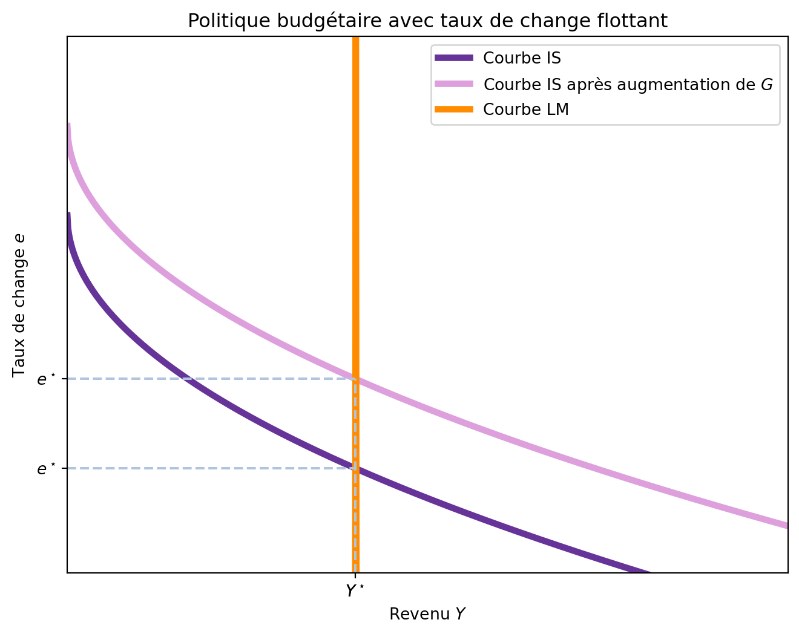
Comme résultat, on observe une appréciation de la monnaie locale, c’est-à-dire, le taux de change e augmente. Cependant, contrairement au modèle IS-LM, la politique budgétaire n’a aucun impact sur le niveau de revenu Y.
Ce résultat peut sembler surprenant, car dans le modèle IS-LM, une augmentation des dépenses publiques entraîne une augmentation du revenu.
Pourquoi la politique budgétaire n’affecte pas le revenu avec un taux de change flottant?
Pour comprendre pourquoi la politique budgétaire n’affecte pas le revenu dans le modèle Mundell-Fleming avec un taux de change flottant, il est essentiel de considérer les mécanismes en jeu.
Revenons à une économie fermée sans commerce international. Dans une économie fermée, une augmentation de G entraîne une augmentation du taux d’intérêt, car la demande de fonds pour financer les dépenses publiques augmente. Mais, quand l’économie est ouverte, les flux de capitaux internationaux entrent en jeu. Comme le taux d’intérêt local serait supérieur au taux d’intérêt mondial r^\star, les investisseurs étrangers cherchent à investir dans le pays pour profiter de ce taux d’intérêt plus élevé. Cependant, pour investir dans le pays, les investisseurs étrangers doivent détenir la monnaie locale. Cela augmente la demande de monnaie locale, ce qui entraîne une appréciation de la monnaie locale, c’est-à-dire, une augmentation du taux de change e. Cette appréciation rend les importations moins chères et les exportations plus chères, ce qui réduit les exportations nettes NX(e).
- Augmentation de G \rightarrow Augmentation de la demande de fonds
- Augmentation du taux d’intérêt
- Entrée de capitaux étrangers
- Appréciation de la monnaie locale
- Diminution des exportations nettes NX(e)
- Équilibre atteint avec le même niveau de revenu Y
Mathématiquement, comme r est constant et exogène, un seul niveau de revenu est possible. En conséquence, toute augmentation de G doit être compensée par une diminution de NX(e) de même montant.
6.5.1.2 La politique monétaire sous un taux de change flottant
Imaginons maintenant que la banque centrale décide d’augmenter l’offre de monnaie M^s. Comme le niveau de prix p est constant, ceci augmente l’offre d’encaisses réels \frac{M^s}{p}, ce qui déplace la courbe LM^{MF} vers la droite. L’effet total de cette politique est une augmentation du revenu Y et une diminution du taux de change e, comme montré dans la Figure 6.5.
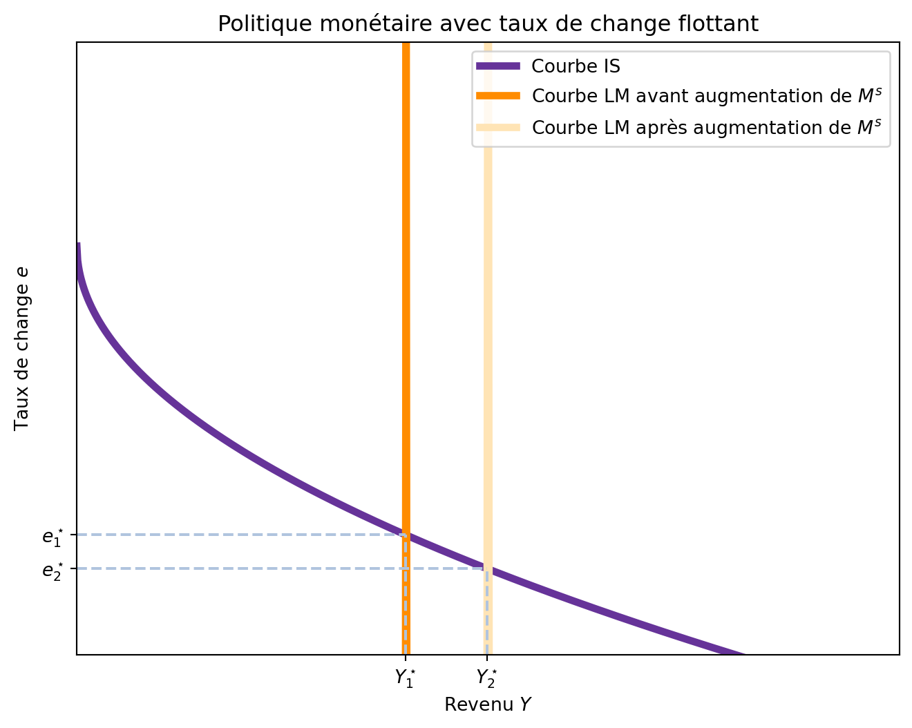
Même si le résultat est équivalent à celui du modèle IS-LM, le mécanisme de transmission est différent.
Pourquoi la politique monétaire augmente le revenu avec un taux de change flottant?
La politique monétaire augmente le revenu avec un taux de change flottant en influençant les taux d’intérêt et les flux de capitaux.
Comme dans l’analyse précédente, il est pratique de considérer d’abord une économie fermée. Dans une économie fermée, une augmentation de l’offre monétaire entraîne une baisse des taux d’intérêt, ce qui stimule l’investissement et augmente le revenu.
Cependant, dans une économie ouverte, les flux de capitaux internationaux entrent en jeu. Avec un taux d’intérêt domestique plus bas que le taux d’intérêt mondial r^\star, les investisseurs étrangers cherchent à investir hors du pays pour profiter de taux d’intérêt plus élevés. Ainsi, les investisseurs étrangers quittent le pays, ce qui augmente l’offre de monnaie locale et déprécie la monnaie nationale. Mais, pour quitter le pays, les investisseurs doivent vendre la monnaie locale, ce qui augmente l’offre de monnaie locale sur le marché international et la déprécie. Cette dépréciation rend les biens domestiques moins chers par rapport aux biens étrangers, ce qui augmente les exportations nettes NX(e).
- Augmentation de M \rightarrow baisse du taux d’intérêt
- Sortie de capitaux étrangers
- Augmentation de l’offre de monnaie locale
- Dépréciation de la monnaie locale
- Augmentation des exportations nettes NX(e)
- Équilibre atteint avec un revenu Y plus élevé
6.5.1.3 La politique commerciale avec taux de change flottant
Le modèle Mundell-Fleming nous permet d’analyser l’impact des politiques commerciales (absentes dans le modèle IS-LM) sur l’économie. Ce type de politique est typiquement mise en oeuvre par le biais des tarifs douaniers, qui cherchent à protéger les industries nationales de la concurrence étrangère.
Imaginons que le gouvernement décide d’augmenter les tarifs douaniers sur les importations. Cette décision déplace la courbe NX(e) vers la droite, car une augmentation des tarifs douaniers sur les importations diminue les importations, augmentant ainsi les exportations nettes. Rappel: NX(e) = X(e) - M(e) et si M(e) diminue, alors NX(e) augmente.
Cependant, comme la courbe LM^{MF} est verticale, ceci ne change pas le revenu Y et le seul effet est une appréciation du taux de change e, comme montré dans la Figure 6.6.
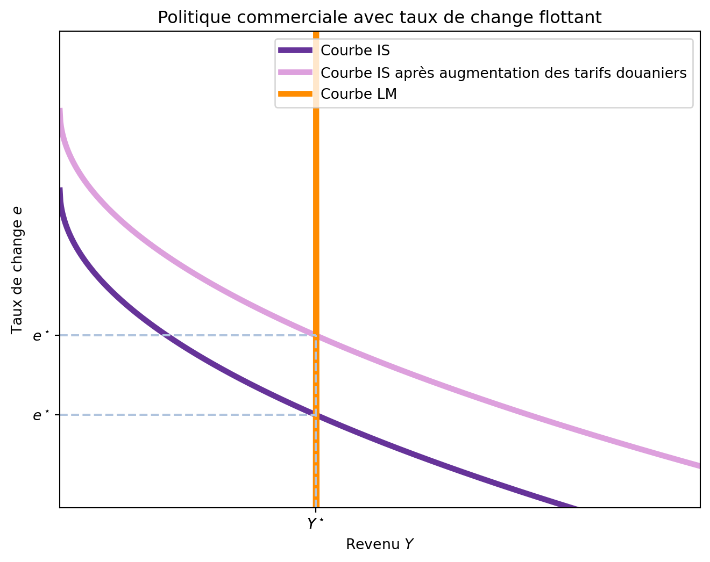
Le raisonnement est similaire à celui d’une augmentation de G. Quand les exportations nettes NX(e) augmentent, cela génère une pression sur le revenu et le taux d’intérêt, qui augmente. Or, r ne peut pas changer car il est exogène et, donc, un flux de capital entre dans le pays pour profiter de la différence de taux d’intérêt, ce qui augmente la demande de monnaie locale et, donc, apprécie le taux de change e. Avec l’apréciation du taux de change, les biens domestiques deviennent plus chers par rapport aux biens étrangers, ce qui réduit les exportations nettes NX(e) jusqu’à leur niveau initial, contrabalant l’effet initial de l’augmentation des tarifs douaniers.
Paradoxe de la politique commerciale
Normalement, les pays déploient une politique commerciale pour modifier la balance commerciale. Or, le modèle Mundell-Fleming nous montre qu’avec un taux de change flottant, ce type de politique commerciale n’a aucun effet sur la balance commerciale. Meme si la restriction initiale tend à augmenter les exportations nettes, l’appréciation du taux de change réduit les exportations nettes et la balance commerciale revient à son niveau initial.
6.5.2 Taux de change fixe
Dans un système de taux de change fixe, le taux de change est maintenu constant par la banque centrale. Cela signifie que la banque centrale s’engage à acheter ou vendre sa monnaie locale contre une monnaie étrangère à un taux de change prédéterminé. Ce type de régime monétaire est souvent utilisé pour stabiliser la monnaie locale et éviter les fluctuations excessives du taux de change.
Comment un taux de change fixe est maintenu?
Pour maintenir un taux de change fixe, la banque centrale doit intervenir sur le marché des changes. Elle le fait en achetant ou en vendant sa monnaie locale contre une monnaie étrangère au taux de change fixé.
Par exemple, si la banque centrale fixe le taux de change à 100 yuans par euro, elle s’engage à acheter des euros à ce taux et à vendre des euros à ce même taux. Cela implique que la banque centrale doit disposer de réserves suffisantes de la monnaie étrangère pour pouvoir intervenir sur le marché. Par contre, elle peut imprimer sa propre monnaie locale pour répondre à la demande de sa monnaie.
Une implication importante de ce système est que les interventions de la banque centrale modifient l’offre monétaire.
Imaginons que, même si la banque centrale fixe le taux de change à 100 yuans par euro, le marché international détermine un taux de change de 150 yuans par euro. Cela veut dire qu’un euro vaut 150 yuans dans le marché international et seulement 100 yuans dans le marché local. Un arbitragiste peut acheter 300 yuans pour 2 euros dans le marché international. Ensuite, il peut vendre ces 300 yuans à la banque centrale pour obtenir 3 euros, réalisant ainsi un profit de 1 euro. Chaque fois que la banque centrale achète des yuans et vend des euros, l’offre monétaire augmente. Sur le marché international, la demande de yuans augmente, ce qui déprécie l’euro jusqu’à ce que le taux de change revienne à 100 yuans par euro.
À l’inverse, si la banque centrale fixe le taux de change à 100 yuans par euro tandis que le marché international détermine un taux de change de 50 yuans par euro, un arbitragiste peut acheter 100 yuans pour 1 euro à la banque centrale et vendre les yuans pour obtenir 2 euros. Chaque fois que la banque centrale vend des yuans contre des euros, l’offre monétaire diminue (et les réserves de yuans de la banque centrale diminuent). Sur le marché international, l’offre de yuans augmente, ce qui déprecie le yuan et apprécie l’euro jusqu’à ce que le taux de change revienne à 100 yuans par euro.
La étalon-or
Pendant la fin du XIXe et le début du XXe siècle, la plupart des grandes économies mondiales fonctionnaient sous l’étalon-or. Chaque pays maintenait une réserve d’or et s’engageait à échanger une unité de sa monnaie contre une quantité d’or spécifiée. Grâce à l’étalon-or, les économies mondiales maintenaient un système de taux de change fixes. Pour comprendre comment un étalon-or international fixe les taux de change, supposons que le Trésor américain soit prêt à acheter ou vendre 1 once d’or pour 100 dollars, et que la Banque d’Angleterre soit prête à acheter ou vendre 1 once d’or pour 100 livres. Ensemble, ces politiques fixent le taux de change entre le dollar et la livre : 1 dollar doit s’échanger contre 1 livre. Sinon, la loi du prix unique serait violée, et il serait profitable d’acheter de l’or dans un pays et de le vendre dans l’autre.
Par exemple, supposons que le taux de change du marché soit de 2 livres par dollar. Dans ce cas, un arbitragiste pourrait acheter 200 livres pour 100 dollars, utiliser les livres pour acheter 2 onces d’or à la Banque d’Angleterre, apporter l’or aux États-Unis et le vendre au Trésor pour 200 dollars, réalisant ainsi un profit de 100 dollars. De plus, en apportant l’or des États-Unis vers l’Angleterre, l’arbitragiste augmenterait la masse monétaire aux États-Unis et diminuerait la masse monétaire en Angleterre. Ainsi, pendant l’ère de l’étalon-or, le transport international de l’or par les arbitragistes était un mécanisme automatique ajustant la masse monétaire et stabilisant les taux de change. Ce système ne fixait pas complètement les taux de change, car le transport de l’or à travers l’Atlantique était coûteux.
6.5.2.1 La politique budgétaire sous un taux de change fixe
Imaginons que le gouvernement décide d’augmenter les dépenses publiques G ou de réduire les impôts T. Cette politique budgétaire déplace la courbe IS^{MF} vers la droite, car une augmentation de G ou une réduction de T augmente la demande globale et, par conséquent, le revenu Y.
Ce type de politique aurait tendence à augmenter le taux d’intérêt r et, donc, à attirer des capitaux étrangers. Avec une demande accrue de monnaie locale, le taux de change e s’apprécierait. Cependant, dans un système de taux de change fixe, la banque centrale doit intervenir pour maintenir le taux de change constant. Cela implique que la banque centrale doit vendre de la monnaie locale et acheter de la monnaie étrangère pour maintenir le taux de change fixe. Cette intervention augmente l’offre de monnaie locale, ce qui déplace la courbe LM^{MF} vers la droite. Ainsi, la politique budgétaire déplace les deux courbes IS^{MF} et LM^{MF} vers la droite, comme montré dans la Figure 6.7. Il est important de noter que l’augmentation de l’offre de monnaie locale n’est pas une décision unilatérale de la banque centrale, mais plutôt une réponse à son engagement à maintenir le taux de change fixe.
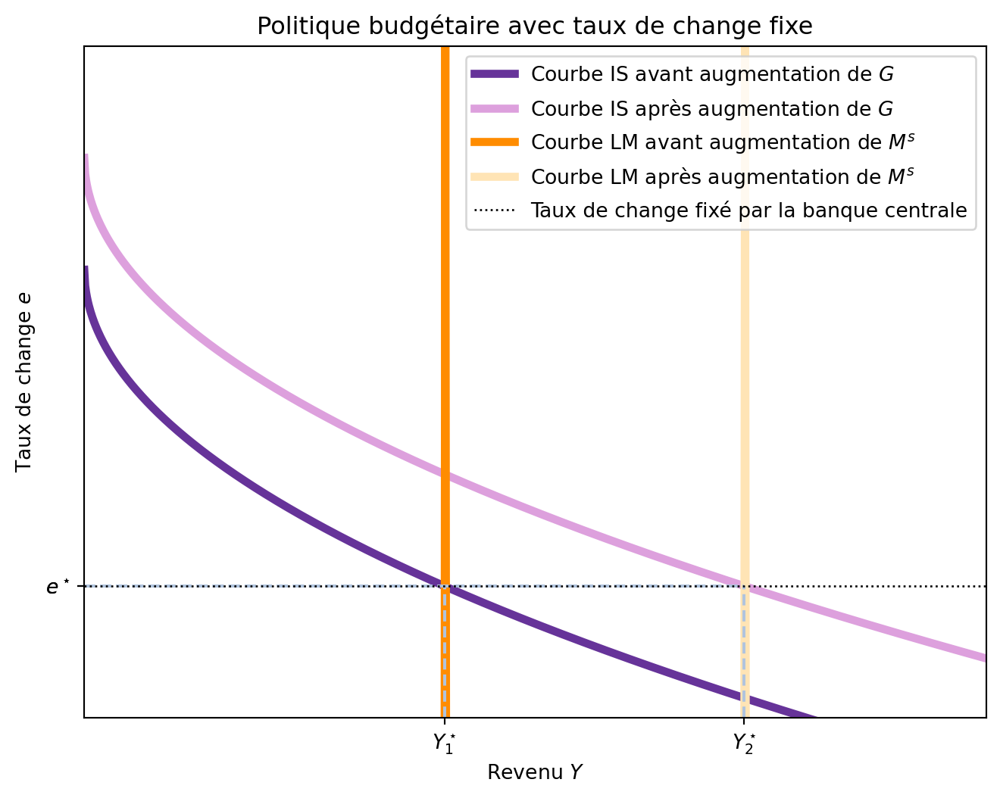
- Augmentation de G \rightarrow augmentation de la demande globale
- Déplacement de la courbe IS vers la droite
- Taux d’intérêt local augmente
- Demande de monnaie locale augmente
- Appréciation de la monnaie locale
- Intervention de la banque centrale pour maintenir le taux de change fixe
- Offre de monnaie locale augmente
- Nouveau équilibre atteint avec un revenu Y plus élevé et un taux de change e constant
6.5.2.2 La politique monétaire sous un taux de change fixe
Imaginons maintenant que la banque centrale décide d’augmenter l’offre de monnaie M^s. Comme le niveau de prix p est constant, ceci augmente l’offre d’encaisses réels \frac{M^s}{p}, ce qui déplace la courbe LM^{MF} vers la droite. Ceci aurait tendance à réduire le taux d’ítérêt r et, donc, à stimuler l’économie mais, avec une économie ouverte, les investisseurs étrangers chercheraient à quitter le pays pour investir dans des actifs étrangers avec un taux d’intérêt plus élevé. Ainsi, l’offre de monnaie locale augmente, ce qui déprécie la monnaie locale. Pour maintenir le taux de change fixe, la banque centrale doit acheter de la monnaie locale et vendre de la monnaie étrangère pour stabiliser le taux de change. Ainsi, la courbe LM^{MF} se déplace vers la gauche jusqu’à ce que le taux de change soit maintenu, autrement dit, jusqu’à ce que la quantité de monnaie soit celle initiale. En conclusion, la politique monétaire n’a aucun effet sous un régime de taux de change fixe. En fixant un taux de change, la banque centrale abandonne son contrôle sur la politique monétaire.
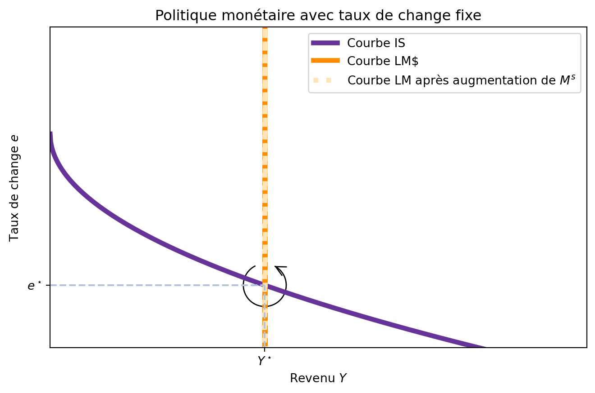
6.5.2.3 Dévaluation
Dans le modèle Mundell-Fleming avec un taux de change fixe, la politique monétaire est inefficace pour influencer l’économie réelle. Néanmoins, rien n’empêche la banque centrale d’agir sur le taux de change, et en fixer un nouveau, c’est-à-dire, changer le prix de sa monnaie.
Typiquement, ce type de politique vise à dévaluer la monnaie locale, car cela rend les exportations plus compétitives et permet d’augmenter la demande pour ces biens à l’étranger et donc le PIB. Pour que cela fonctionne, la banque centrale doit augmenter l’offre monétaire jusqu’à ce que le nouveau taux de change soit atteint. La Figure 6.9 montre l’impact d’une telle dévaluation sur l’économie.
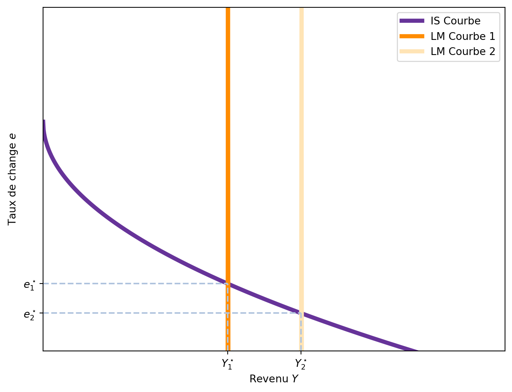
L’effet d’une dévaluation est similaire à celui d’une augmentation des dépenses publiques, mais elle agit principalement sur le secteur extérieur de l’économie. Avec un taux de change plus bas, les exportations augmentent et les importations diminuent.
Sortie de la crise de 1930 par la dévaluation
La Grande Dépression des années 1930 était un problème mondial. Une différence clé entre les gouvernements était leur engagement envers le taux de change fixe établi par l’étalon-or international. Certains pays, comme la France, l’Allemagne, l’Italie et les Pays-Bas, ont maintenu l’ancien taux de change entre l’or et la monnaie. D’autres pays, comme le Danemark, la Finlande, la Norvège, la Suède et le Royaume-Uni, ont réduit la quantité d’or qu’ils paieraient pour chaque unité de monnaie d’environ 50 %. En réduisant la teneur en or de leurs monnaies, ces gouvernements ont dévalué leurs monnaies par rapport à celles des autres pays.
L’expérience ultérieure de ces deux groupes de pays confirme la prédiction du modèle de Mundell-Fleming. Les pays qui ont poursuivi une politique de dévaluation se sont rapidement remis de la Dépression. La valeur plus faible de la monnaie a augmenté la masse monétaire, stimulé les exportations et étendu la production. En revanche, les pays qui ont maintenu l’ancien taux de change ont souffert plus longtemps d’un niveau déprimé d’activité économique.
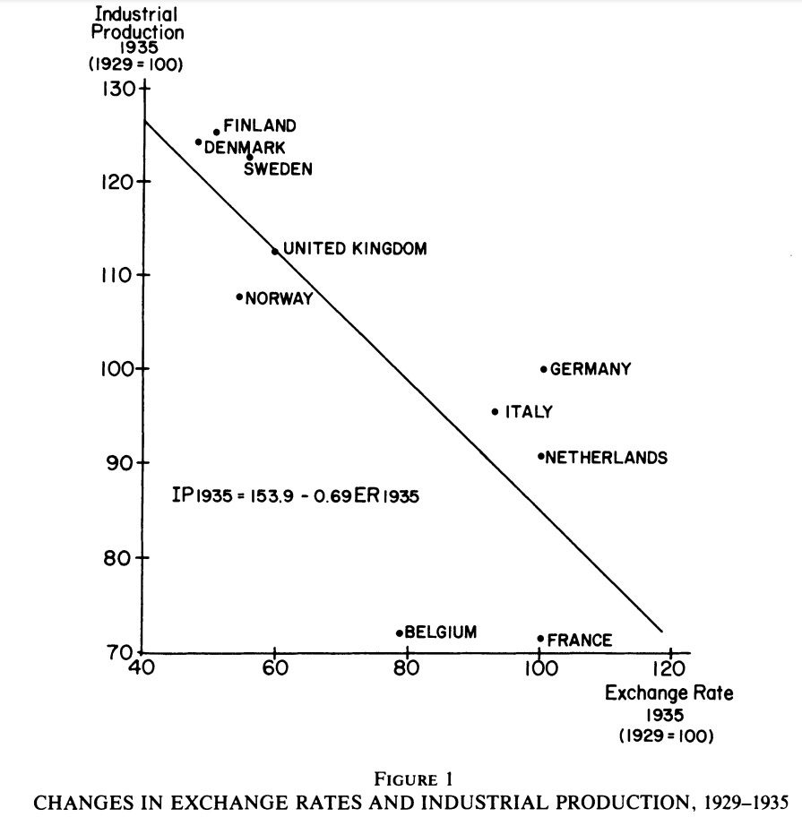
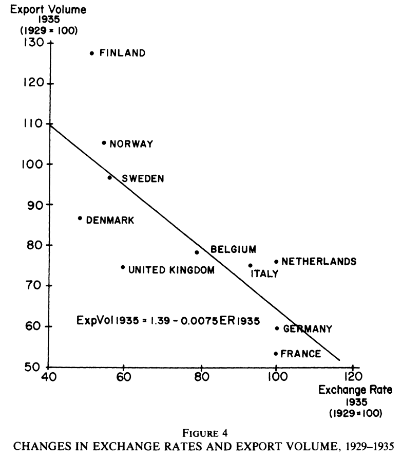
Voir l’article de Barry Eichengreen et Jeffrey Sachs
6.5.3 Politique commerciale avec taux de change fixe
Enfin, un autre outil de politique économique est la politique commerciale. Si le gouvernement introduit une tarification sur les importations, elles deviendront plus chères pour les consommateurs et donc moins attractives. Cela déplace la courbe IS^{MF} vers la droite, car avec moins d’importations, les exportations nettes NX(e) augmentent. Cependant, un déplacement de la courbe IS^{MF} vers la droite engendrerait une augmentation du taux de change e, ce qui est impossible car le pays opère avec un taux de change fixe. Dans ce cas, les arbitreurs souhaiteraient vendre la monnaie locale pour acheter des devises étrangères et, pour cela, ils l’achètent moins chère auprès de la banque centrale. Cela provoque une augmentation de la masse monétaire, déplaçant ainsi la courbe LM^{MF} vers la droite et augmentant le revenu par le biais d’une augmentation des exportations nettes.
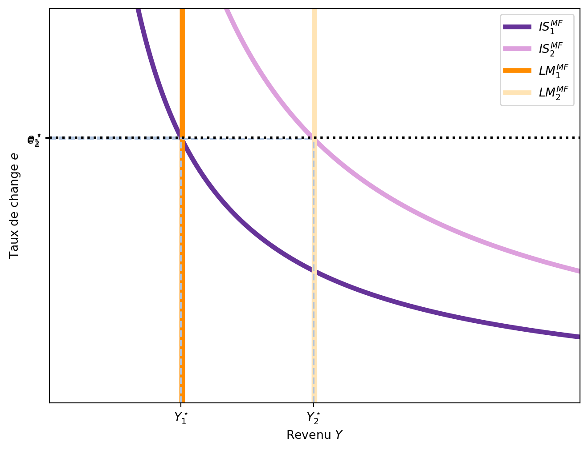
Le résultat des politqiues commerciale restrictives est très différent selon le régime de change. Dans les deux cas, la courbe des exportations nettes se déplace vers la droite, mais seule une restriction commerciale sous un régime de taux de change fixe augmente les exportations nettes NX(e). La raison en est qu’une restriction commerciale sous un régime de taux de change fixe entraîne une expansion monétaire plutôt qu’une appréciation de la monnaie. Lorsque le revenu augmente, l’épargne augmente également, ce qui implique une augmentation des exportations nettes.
6.6 Taux de change fixe ou flottant?
Chaque type de taux de change (fixe ou flottant) a ses avantages et ses inconvénients.
Le principal argument en faveur d’un taux de change flottant est qu’il permet à un pays de conserver son autonomie en matière de politique monétaire. Dans un système de taux fixe, la politique monétaire est entièrement dédiée au maintien du taux de change au niveau annoncé, limitant ainsi sa capacité à répondre aux besoins internes de l’économie. En revanche, un régime de taux flottant offre aux décideurs politiques la liberté de poursuivre d’autres objectifs, tels que la stabilisation de l’emploi ou le contrôle de l’inflation. Cette flexibilité peut s’avérer cruciale en périodes de chocs économiques asymétriques, permettant à l’économie de s’ajuster plus rapidement.
Cependant, les partisans des taux de change fixes soulignent que l’incertitude liée aux fluctuations des taux peut entraver le commerce international. Les dirigeants d’entreprises affirment souvent que cette volatilité est préjudiciable car elle accroît l’incertitude entourant les transactions internationales. Un autre argument en faveur des taux de change fixes est qu’ils peuvent servir de mécanisme disciplinaire pour l’autorité monétaire, empêchant une croissance excessive de la masse monétaire. Toutefois, il existe d’autres règles de politique monétaire qui peuvent atteindre des objectifs similaires, comme des cibles de PIB nominal ou d’inflation, sans les contraintes imposées par un taux de change fixe.
Euro
L’introduction de l’euro en 2000 signifia la disparition des monnaies nationaux 19 pays européens et l’adoption d’une seule monnaie unique. Un des arguments en faveur de la monnaie unique est qu’elle permettrait de réduire les coûts de transaction dans le commerce international en éliminant les risques de change et qu’elle faciliterait aussi le tourisme.
L’adoption de la monnaie unique a également porté des arguments contre. Premièrement, l’adoption de la monnaie unique a entraîné une perte de souveraineté monétaire pour les pays membres, car la politique monétaire est désormais déterminée par la Banque centrale européenne (BCE) plutôt que par les banques centrales nationales. Ainsi, aucun pays ne peut utiliser la politique monétaire pour stimuler son économie ou lutter contre le chômage. Or, pendant la crise de 2008-2013, la situation différente entre les pays du nord et du sud de l’Europe a mis en évidence les limites de la politique monétaire unique. Avec un taux de chômage de 12.2% en Italie, 16.5% au Portugal, 26.1% en Espagne et 27.3% en Grèce, un pays avec le contrôle de sa monnaie aurait pu utiliser augmenter la masse monétaire et déprécié leurs monnaies pour rendre leurs exportations plus compétitives et amortir la récession.
La raison pour laquelle la BCE n’a pas déprécié l’euro pour aider ces économies en difficulté tient à la nature même de l’Union économique et monétaire. La BCE doit concilier les intérêts de tous les pays membres de la zone euro, et non ceux d’un seul pays en particulier. Le conseil des gouverneurs de la BCE est composé de représentants de chacun des États membres de la zone euro, ce qui signifie que chaque décision doit être prise en tenant compte des différentes situations économiques des pays membres. Dans ce contexte, la BCE a souvent privilégié une politique monétaire équilibrée visant à maintenir la stabilité des prix dans l’ensemble de la zone euro, même si cela signifiait ne pas répondre pleinement aux besoins spécifiques des pays les plus touchés par la crise.
6.6.1 Attaques spéculatifs, caisse d’émission monétaire
Un taux de change fixe signifie qu’un pays décide de lier la valeur de sa monnaie à une autre devise (par exemple, l’euro ou le dollar) à un taux précis. Imaginons que la France utilise une monnaie fictive, le franc, et que la Banque de France fixe un taux de change de 1 franc = 1 euro. Pour maintenir cette parité, la Banque de France doit être prête à acheter des francs (en donnant des euros) ou à vendre des francs (en recevant des euros) à ce taux. Cependant, un problème peut survenir si les investisseurs, entreprises ou spéculateurs doutent que la Banque de France ait assez de réserves en euros pour garantir ce taux de change. Cela peut déclencher une attaque spéculative.
Les spéculateurs commencent par vendre massivement des francs à la Banque de France pour obtenir des euros au taux fixe de 1 pour 1, tant que la parité tient. Cette vente massive oblige la Banque de France à puiser dans ses réserves d’euros pour acheter les francs. Si ces réserves s’épuisent, la Banque ne peut plus défendre le taux de change fixe et doit dévaluer le franc, par exemple en fixant un nouveau taux de 1 franc pour 0,8 euro. Les spéculateurs, qui ont accumulé des euros avant la dévaluation, peuvent alors racheter des francs à ce taux plus bas.
Pour éviter ce genre d’attaque, un pays peut mettre en place une caisse d’émission monétaire, également appelée currency board. Ce système garantit que chaque unité de monnaie nationale est entièrement soutenue par une quantité équivalente de devises étrangères, comme des euros, détenues en réserve. Par exemple, si un million de francs circulent, la caisse doit avoir au moins un million d’euros en stock. Si le taux fix de change était de 1 franc = 0.5 euro, alors la caisse devrait avoir au moins 500 000 euros en réserve pour chaque million de francs en circulation. Cela permet à quiconque, qu’il s’agisse de citoyens, d’entreprises ou d’investisseurs, d’échanger des francs contre des euros au taux fixe à tout moment, ce qui renforce la confiance en la monnaie. La caisse impose une règle stricte : elle ne peut émettre de nouveaux francs que si elle reçoit une quantité équivalente d’euros dans ses réserves. Cette discipline empêche la création excessive de monnaie, limitant ainsi les risques d’inflation ou de perte de confiance, mais le prix à payer est une perte de flexibilité monétaire.
Le Royaume-Uni et le mécanisme de change européen (ERM)
Pour adopter l’euro, les pays de l’Union européenne devaient respecter plusieurs critères établis par le traité de Maastricht en 1992, connus sous le nom de critères de convergence. Parmi ces conditions, une était particulièrement importante pour la stabilité monétaire : les monnaies locales devaient participer au Mécanisme de taux de change européen (MCE, ou ERM en anglais) pendant au moins deux ans, sans dévaluation majeure. Dans ce système, les monnaies étaient liées les unes aux autres avec un taux de change central fixe, et elles ne pouvaient fluctuer que dans une bande étroite autour de ce taux. L’idée était de démontrer que la monnaie nationale pouvait rester stable face aux autres devises européennes, sans interventions excessives des banques centrales, pour préparer une union monétaire harmonieuse.
La crise de 1992, souvent appelée “Mercredi noir” (Black Wednesday), a précisément remis en cause cette stabilité pour la livre sterling britannique. À l’époque, le Royaume-Uni avait rejoint l’ERM en 1990, fixant la livre à environ 2,95 marks allemands, avec l’engagement de la maintenir dans sa bande de fluctuation. Cependant, l’économie britannique traversait une période difficile : inflation élevée, récession, et une livre considérée comme surévaluée par rapport à la réalité économique, surtout après la réunification allemande qui avait renforcé le mark. Des spéculateurs, menés par l’investisseur George Soros via son fonds Quantum Fund, ont perçu cette vulnérabilité et ont lancé une attaque massive contre la livre.
Soros et d’autres spéculateurs ont parié sur une dévaluation en vendant massivement des livres sterling sur les marchés des changes, échangeant la monnaie britannique contre des marks ou d’autres devises fortes. Ils ont emprunté ou acquis des milliards de livres pour les vendre, anticipant que la Banque d’Angleterre ne pourrait pas défendre indéfiniment le taux fixe. Cette pression a fait chuter la valeur de la livre, la poussant vers le bas de sa bande de fluctuation. Pour contrer cela, la Banque d’Angleterre a dépensé des réserves massives en devises étrangères (estimées à environ 3,3 milliards de livres en une journée) pour racheter des livres et stabiliser le taux. Le gouvernement a même augmenté les taux d’intérêt de manière drastique, passant de 10 % à 12 %, puis à 15 % en quelques heures, pour rendre la livre plus attractive et décourager les ventes. Mais ces mesures n’ont pas suffi : le 16 septembre 1992, la livre a dépassé les limites de sa bande, forçant le Royaume-Uni à suspendre sa participation à l’ERM et à laisser la livre flotter librement sur les marchés. Cela a entraîné une dévaluation immédiate d’environ 15 %.
6.6.2 Triangle d’incompatibilité (“Impossible Trinity”)
Dans le modèle Mundell-Fleming, on suppose que les capitaux (l’argent des investisseurs) peuvent se déplacer librement entre les pays. Cette libre mobilité des capitaux signifie que les taux d’intérêt d’un petit pays ouvert doivent s’aligner sur ceux du reste du monde. Pourquoi ? Parce que si le taux d’intérêt dans ce pays est plus élevé, les investisseurs étrangers y envoient leur argent pour profiter de meilleurs rendements, ce qui augmente la demande pour la monnaie locale et fait monter son taux de change.
Le modèle montre qu’un pays doit choisir entre trois objectifs, mais ne peut en poursuivre que deux à la fois : la libre mobilité des capitaux, un taux de change fixe (une monnaie dont la valeur est liée à une autre devise, comme l’euro ou le dollar), et une politique monétaire indépendante (la capacité de la banque centrale à fixer ses propres taux d’intérêt ou à contrôler la quantité de monnaie pour influencer l’économie, par exemple pour stimuler la croissance ou contrôler l’inflation).
Si un petit pays ouvert choisit la libre mobilité des capitaux et un taux de change fixe, il perd son indépendance monétaire. Pourquoi ? Pour maintenir un taux de change fixe, la banque centrale doit intervenir constamment sur le marché des changes en achetant ou vendant sa monnaie pour garder sa valeur stable et donc est incapable de fixer le taux d’intérêt de manière indépendante.
Inversement, si le pays veut une politique monétaire indépendante tout en maintenant la libre mobilité des capitaux, il doit renoncer au taux de change fixe. Dans ce cas, la banque centrale peut ajuster les taux d’intérêt ou la quantité de monnaie pour gérer l’économie, mais le taux de change de la monnaie fluctuera en fonction des mouvements de capitaux.
Enfin, pour avoir à la fois un taux de change fixe et une politique monétaire indépendante, le pays devrait restreindre la mobilité des capitaux. En limitant les flux d’argent entrant ou sortant, le pays peut fixer ses propres taux d’intérêt sans que ceux-ci soient immédiatement influencés par le reste du monde. Cela permet à la banque centrale de maintenir un taux de change stable tout en menant une politique monétaire adaptée à ses besoins internes, comme ajuster les taux pour contrôler l’inflation ou stimuler la croissance.
Ce dilemme, souvent appelé la “trilème de Mundell”, force les pays à faire un choix stratégique.
6.7 TD
Expliquez comment les événements suivants impactent le revenu, le taux de change et les exportations nettes sous un régime de taux de change flottant.
Une chute de la confiance des consommateurs les pousse à réduire leur consommation et à augmenter leurs épargnes.
L’apparition d’une nouvelle gamme de voitures Tesla électriques fait que les consommateurs préfèrent les voitures étrangères aux voitures nationales.
Expliquez comment les événements suivants impactent le revenu, le taux de change et les exportations nettes sous un régime de taux de change fixe.
Une chute de la confiance des consommateurs les pousse à réduire leur consommation et à augmenter leurs épargnes.
L’apparition d’une nouvelle gamme de voitures Tesla électriques fait que les consommateurs préfèrent les voitures étrangères aux voitures nationales.
Une petite économie ouverte se décrit par les équations suivantes:
\begin{aligned} C &= 50 + 0.75(Y-T) \\ I &= 200 - 20r \\ NX &= 200 - 50 e \\ L(Y,r) &= Y - 40r \\ G &= 200 \\ T &= 200 \\ M^s &= 3000 \\ p &= 3 \\ r^\star &= 5 \end{aligned}
1. Calculez et tracez les courbes $IS^{MF}$ et $LM^{MF}$.
2. Calculez le niveau d'équilibre du revenu, taux de change et exportations nettes.
3. Si le taux de change est flottant, comment une augmentation de $G$ de $G_0 = 200$ à $G_1 = 250$ affecte-t-elle le revenu, le taux de change et les exportations nettes?
Tracez un digramme.
4. Si le taux de change est fixe, comment une augmentation de $G$ de $G_0 = 200$ à $G_1 = 250$ affecte-t-elle le revenu, le taux de change et les exportations nettes?Une petite économie ouverte avec un taux de change flottant est en récession. Si les politiciens souhaitent maintenir le revenu et ne pas changer les exportations nettes, quelle politique fiscal et monétaire doivent-ils mettre en place?
Imaginons que le taux d’intérêt mondial r^\star augmente.
Si l’économie a adopté un taux de change flottant, comment ça affecte le revenu, le taux de change et les exportations nettes?
Si l’économie a adopté un taux de change fixe, comment ça affecte le revenu, le taux de change et les exportations nettes?
Un politicien cherche à faire l’industrie européenne plus compétitive (que les entreprises européennes vendent plus à l’étranger).
Comment une modification du taux de change (nomial) affecte-t-elle les exportations nettes?
Comment pourrait-on augmenter la compétitivité de l’industrie européenne sans modifier le revenu si le taux de change est flottant?
Imaginez que les exportations nettes sont une fonction du taux de change et du niveau de revenu (NX(e,Y)): quand le revenu augmente, les importations augmentent et donc NX(e, Y) diminue.
Comment une augmentation de G affecte le niveau de revenu d’équilibre et les exportations nettes si le taux de change est flottant?
Comment une augmentation de G affecte le niveau de revenu d’équilibre et les exportations nettes si le taux de change est fixe?
Comme on travaille à court terme les prix (dans notre pays et à l’étranger) sont fixes. Ainsi, le taux de change réel et nominal sont proportionnels.↩︎
Comme on travaille à court terme les prix (dans notre pays et à l’étranger) sont fixes. Ainsi, le taux de change réel et nominal sont proportionnels.↩︎